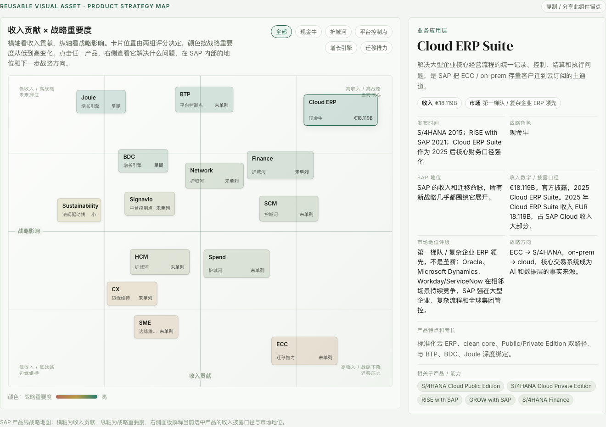

SAP 全产品线战略地图
SAP 官网的产品线介绍很完整，也很容易让人迷路。这张地图把琳琅满目的产品重新放进一条线：先看位置，再看关系，最后看战略意义。

当前核心
未来押注
迁移压力
边缘维持
如何读这张地图
SAP 的产品页像一整面货架：ERP、采购、人力、供应链、平台、数据、AI 都摆在一起，看起来都重要，但很难判断哪些是收入核心、哪些是未来押注、哪些只是补充模块。这张图的目的不是再做一份产品目录，而是帮你先建立方向感。
读图时只需要记住两件事：横轴看当前收入、客户存量和迁移价值，纵轴看它是否能解释 SAP 的 cloud + AI 转型。越靠右，商业体量越大；越靠上，战略权重越高。点击产品时，再看右侧的收入口径、市场地位和战略方向。
地图先解决“这些产品分别站在哪里”。但位置本身还不够：如果不知道产品之间的依赖关系，BTP、BDC、Joule 这些高战略产品就会像突然冒出来的新名词。所以下一章先看架构关系。
产品架构逻辑：SAP 产品如何协作
这一章只回答一个问题：SAP 的产品作为一套企业系统，是怎么协作的？它暂时不判断谁更赚钱，而是解释从业务事实、平台扩展、数据语义到 AI 执行的上下游关系。
这套架构的价值在于：ERP、采购、人力、供应链不是孤岛，而是共同产生 SAP 可供 BTP、BDC 和 Joule 调用的业务上下文。AI 能不能执行，取决于它能不能读懂这些流程、对象和权限。
业务应用层：按端到端流程组织
这一层不是“ERP 旁边放几套 SaaS”。SAP 的组织逻辑是把企业关键流程串成闭环：财务是控制中心，采购和供应链提供外部与实物流，人力提供组织和权限上下文，CX 连接前台客户流程。S/4HANA / Finance 记录核心交易、会计凭证、成本中心、利润中心和集团管控，是很多流程的结算终点；Ariba / Network 把采购、供应商、合同、PO、发票和外部交易伙伴接入 ERP；SuccessFactors 则让业务动作落到具体员工、岗位和组织责任上。
平台层：按“核心外置”组织
平台层的内在逻辑是 clean core：核心 ERP 尽量标准化，客户差异化能力放到 BTP 侧，通过集成、扩展、自动化和流程诊断来实现。Integration Suite 负责 SAP 与非 SAP 系统连接，SAP Build 承接低代码应用和流程自动化，Signavio 帮客户先看清流程实际怎么跑，Cloud ALM 则管理实施、运维、监控和变更。
数据层：按“语义保留 + 开放连接”组织
数据层的关键不是把所有数据搬进 SAP，而是保住 SAP 数据里的业务含义：订单、供应商、物料、成本中心、员工这些对象之间的关系，必须能被分析系统和 AI 理解。BDC 是新的数据叙事入口，Datasphere 承担语义建模和数据集成，HANA Cloud 提供 SAP 体系内的数据底座，SAP Databricks 则把 SAP 业务语义带到开放 lakehouse / AI 工程生态。
AI 层：按“入口、执行、构建、治理”组织
AI 层不是一个模型产品，而是一组能力分工：Joule 是用户入口，Agents 是流程执行单元，Joule Studio 让客户构建自定义工作流，AI Core / Launchpad 负责运行和治理。它们的价值不在“多一个聊天界面”，而在能否进入 SAP 权限、业务对象和流程状态，触发受控动作。
架构关系解释了“它们如何连在一起”，但还没有回答 SAP 为什么要把资源压在这些地方。下一章换一个视角：不再按技术层看，而是按商业命运看。
战略意义层：SAP 为什么押注这些产品
这一章回答另一个问题：这些产品在 SAP 内部到底承担什么战略命运？有些产品直接赚钱，有些产品不一定单独贡献最大收入，但决定客户能否迁移、能否留下、能否继续增购。
这套战略分层的核心判断是：SAP 不是平均用力经营所有产品，而是把 Legacy 压力转成云订阅，把核心流程变成护城河，再用平台、数据和 AI 提高长期客单价。
研究结论
读完地图、架构和战略分层后，可以把 SAP 产品线压缩成下面六个判断。它们不是新的产品介绍，而是这页希望帮你形成的研究结论：
| 来源 | 用途 | 评价 |
|---|---|---|
| SAP 2025 Integrated Report / Five-Year Summary | Cloud、Cloud ERP Suite、总收入等财务口径 | 官方一手资料 |
| SAP Business Suite 官方产品页 | Business Suite 组成与定位 | 官方产品资料 |
| SAP Business AI Q1 2026 Release Highlights | Joule agents 与 skills 数量 | 官方新闻资料 |
| SAP Business Data Cloud launch announcement | BDC 与 Databricks 定位 | 官方新闻资料 |
| SAP maintenance strategy for Business Suite 7 | ECC / Business Suite 7 维护期限 | 官方支持资料 |